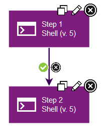
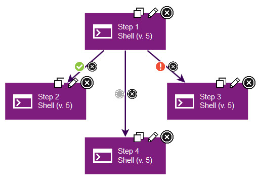

Conditional processes
Every connection (except connections from the Start step) has a delete tool and conditional flag. The conditional flag sets a condition on a connection.
To change a flag value, cycle through possible values by clicking the flag.
The possible conditional flags are as follows:
success: The process is complete.fail: The process did not finish.both: The process is complete or the process did not finish. Either status is acceptable, and the next step can start.
The following figure shows two steps that are connected with a
success conditional
flag, which is the default for new connections. In this case, if the
first step finishes, the process follows the connection to the second
step. If the first step fails, the process ends, and the second step
does not run.
A step can have multiple connections with different conditional
flags. For example, the following figure shows a step with three connections:
- The connection to step 2 has a
successflag. Step 2 runs if the first step finishes. - The connection to step 3 has a
failureflag. Step 3 runs if the first step fails. - The connection to step 4 has a
bothflag. Step 4 runs regardless of whether step 1 finishes or fails.

Note: If a step has multiple connections that eventually reach the
same target step, determining whether the target runs depends on the
value of the intervening flags. If all of the intervening connections
have success flags, the target runs only if all the steps are successful.
For an entire process to succeed, it must reach a Finish step. If it does not end with Finish, the process fails.